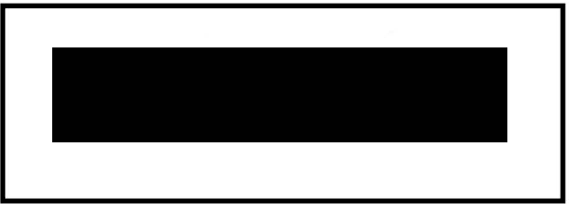
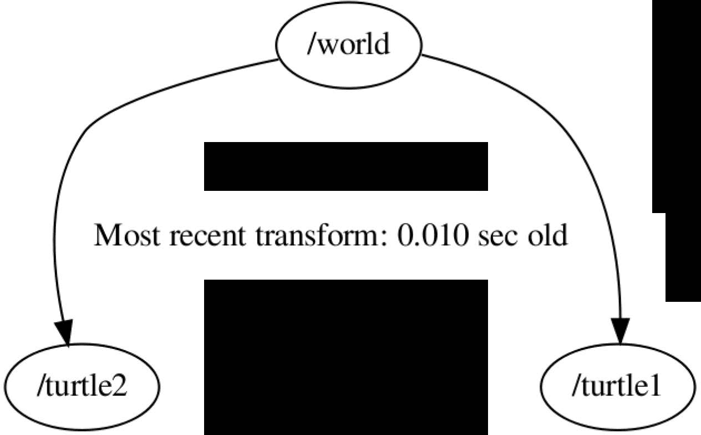
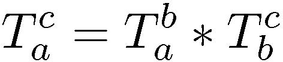
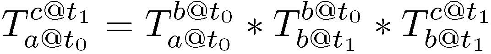
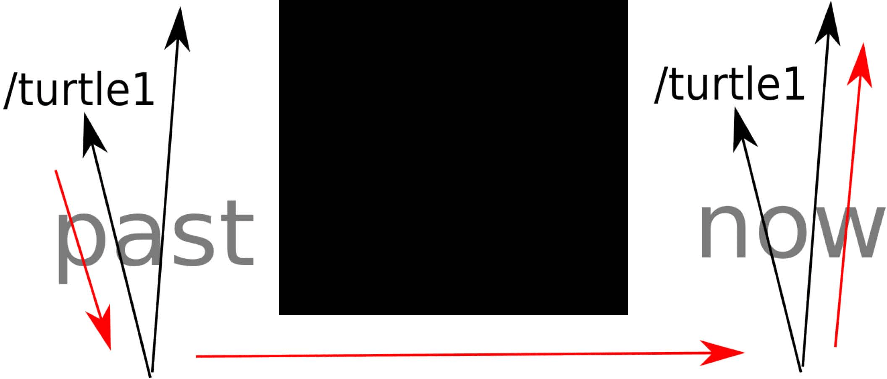

tf: библиотека преобразований
Tully Foote Open Source Robotics Foundation Mountain View, CA 94043 Email: tfoote@osrfoundation.org
Аннотация — Библиотека tf была разработана для того, чтобы предоставить стандартный способ отслеживания систем координат и преобразования данных внутри целой системы, чтобы пользователи отдельных компонентов могли быть уверены, что данные представлены в нужной им системе координат, не требуя знания всех систем координат в системе. На раннем этапе разработки Robot Operating System (ROS) отслеживание систем координат было выявлено как распространённая болевая точка для разработчиков. Сложность этой задачи делала её частым источником ошибок, когда разработчики неправильно применяли преобразования к данным. Проблема также осложняется тем, что источники информации о преобразованиях между разными наборами систем координат часто распределены. В этой статье будет объяснена сложность проблемы и выделены требования. Затем будет рассмотрена конструкция библиотеки tf применительно к этим требованиям. Будут представлены несколько практических примеров использования, демонстрирующих успешное развёртывание библиотеки. А также мощные расширения основных возможностей, такие как способность преобразовывать данные во времени, а не только в пространстве.
I. Введение
При выполнении роботом задач крайне важно, чтобы робот знал, где находится он сам, а также где находится остальной мир относительно него. Простой пример, хорошо демонстрирующий это, — мобильный робот, находящий красный мяч и касающийся его своим захватом. Задача проста — переместить захват к мячу. Однако для выполнения этой простой задачи необходимо знать взаимосвязь между мячом и захватом. Если в комнате есть датчик, способный обнаружить мяч в пространстве, требуемое вычисление состоит в том, чтобы вычислить преобразование от датчика к комнате, к основанию робота, к торсу, к плечу, к локтю, к запястью, к захвату. Затем сравнить это с положением мяча, поскольку сравнивать положения двух объектов можно только в одной и той же системе координат. Если результатом этого является то, что захват должен сдвинуться на 3 см влево в системе координат датчика, для вычисления того, какое движение должен выполнить робот, эти 3 см влево в системе координат датчика должны быть преобразованы в систему координат торса путём вычисления преобразования от датчика к комнате, к основанию, к торсу. Из этого можно выяснить, что 3 см влево в системе координат датчика на самом деле означают 3 см вниз в системе координат торса. Поэтому роботу достаточно просто сдвинуть руку вниз на 3 см.
Это относительно простая робототехническая система, но для выполнения этого вычисления требовалось знание всей системы. По мере роста сложности робототехнических систем — включая датчики, двигатели, вычисления и связь — способность любой подсистемы обладать полным знанием об остальной системе снижается, и разработчик компонента должен продумать, какая именно информация необходима его модулю для выполнения задачи. В пределах одного компьютера значительная часть этого — задача проектирования интерфейсов для передачи информации между модулями. По мере того как робототехнические системы становятся всё более распределёнными между несколькими компьютерами, наступает момент, когда не вся информация может быть доступна из-за ограничений по пропускной способности.
Было бы очень мощным решением, если бы программист мог просто запросить у библиотеки: каков вектор, на который мне нужно переместить захват относительно торса, чтобы коснуться мяча. Это фактический вопрос, релевантный задаче, и программисту не нужно знать о конфигурации каких-либо промежуточных звеньев. Если бы это была более сложная система со вторым роботом, наблюдающим мяч с другой стороны стола, это не имело бы значения для программиста, равно как и то, был бы датчик установлен на голове робота. Запрос одинаков в каждом случае, и программисту нужно знать только системы координат, в которых он хочет работать, и те, что релевантны задаче, при условии, что система знает промежуточные системы координат и может вычислить результирующие преобразования.
Библиотека tf была разработана для того, чтобы предоставить стандартный способ отслеживания систем координат и преобразования данных внутри целой системы, чтобы пользователи отдельных компонентов могли быть уверены, что данные представлены в нужной им системе координат, не требуя знания всех систем координат в системе. По мере того как робототехнические системы становятся всё более и более сложными, возможность сосредоточиться именно на нужной системе координат задачи и только на релевантных системах координат становится критически важной. Большинство робототехнических систем объединяют данные от множества разных датчиков с разными системами координат.
Библиотека tf была разработана как пакет ROS для предоставления этой возможности [1]. У библиотеки tf есть два стандартных модуля: Broadcaster (передатчик) и Listener (слушатель). Эти два модуля разработаны для интеграции с экосистемой ROS, но в целом полезны и за её пределами [2].

II. Смежные работы
Библиотека tf наиболее тесно связана с концепцией scene graph (графа сцены). Граф сцены — это распространённая структура данных, используемая для представления 3D-сцены в целях рендеринга.
Графы сцены активно используются в визуализаторах для рендеринга 3D-сцен, а также в робототехнических симуляторах примерно с той же целью [3] [4] [5].
Графы сцены, как правило, состоят из дерева объектов, подлежащих рендерингу. Каждый объект присоединён к родительскому объекту с указанием положения и другой информации. В зависимости от приложения, дополнительная информация может варьироваться от сеток визуализации для чистого рендеринга до правил обновления и инерциальных свойств для симуляторов.
Одним из интересных расширений графов сцены является проект OSGAR, который стремился использовать проект Open Scene Graph для поддержки дополненной реальности [6] [7].
3D-движок OGRE также использует графы сцены [8]. Дерево tf было интегрировано в граф сцены OGRE в инструменте рендеринга rviz [9]. На рисунке 1 можно увидеть дерево tf, отображённое как элементы графа сцены OGRE, а также использованное для информирования графа сцены OGRE о положениях сеток робота PR2.
На этапе проектирования древовидная структура данных доказала свою полезность для целей tf.
III. Требования
Библиотеку tf можно разделить на две разные части. Первая часть — распространение информации о преобразованиях по всей системе. Вторая часть библиотеки принимает информацию о преобразованиях и хранит её для последующего использования. Затем вторая часть способна отвечать на запросы о результирующем преобразовании между разными системами координат.
Часто существует несколько разных источников информации о различных системах координат в системе. Каждый из этих источников информации часто подключён к аппаратному обеспечению и производит данные (например, значения датчиков, обратную связь от исполнительных механизмов) с разной частотой, причём может быть подключён по каналу связи с нетривиальной задержкой или потерей пакетов. Поэтому библиотека tf должна принимать асинхронные входные данные и быть устойчивой к задержанной или утерянной информации.
Библиотека tf была разработана как основная библиотека экосистемы ROS. Для поддержки приложений ROS ей нужно было быть устойчивой к средам распределённых вычислений с ненадёжными сетями и ненулевой задержкой. Проектирование также было обусловлено необходимостью взаимодействия с использованием анонимной передачи сообщений по модели publish-subscribe.
Библиотеке нужно уметь предоставлять преобразование между двумя системами координат в запрошенный момент времени. Если данные недоступны, библиотека должна предоставить пользователю соответствующую ошибку и не возвращать недействительные данные. Она также должна строиться на основе системы распределения данных и быть устойчивой к тем же типам помех.
Не предполагалось, что система будет иметь постоянную структуру, поэтому она также должна предоставлять возможность динамически изменять взаимосвязи между системами координат, включая добавление, удаление и изменение соединений между системами координат.
IV. Проектирование
Поскольку требования были разделены, так же было разделено и проектирование. Распространение данных было реализовано в модуле Broadcaster.
В то время как приём и запросы преобразований выполнялись модулем Listener.
A. Структуры данных
Преобразования и системы координат можно представить в виде графа, где преобразования — это рёбра, а системы координат — узлы. В таком представлении итоговое преобразование — это просто произведение рёбер, соединяющих любые два узла. Граф может состоять из одной или нескольких несвязанных подграфов, и преобразование можно вычислить между узлами внутри подграфов, но не между несвязанными подграфами.


Преобразования по своей природе направлены. Для прохождения ребра в обратном направлении можно использовать обратное преобразование. Однако в произвольном графе между двумя узлами может существовать несколько путей, что приводит к двум или более потенциальным итоговым преобразованиям, делая результат запроса неоднозначным. Чтобы избежать этого, граф должен быть ацикличным.
Для обеспечения быстрого поиска дерево должно быть быстро обыскиваемым. Ограничение графа деревом позволяет быстро искать связность. Это становится важным по мере роста сложности графа. В качестве примера сложного дерева можно привести робота PR2, чей граф показан на Рисунке 2.
Выбор дерева повторяет то, что наблюдалось при разработке графов сцены. Отличие между графом сцены и структурой данных дерева tf заключается в том, что граф сцены разработан для периодического обхода, в то время как дерево tf разработано для асинхронных запросов конкретных значений.
Древовидная структура также имеет преимущество, позволяя динамически изменять структуру без использования дополнительной информации, кроме направленных рёбер графа. Когда ребро публикуется в узел, ссылающийся на другого родительского узла, дерево разрешается к новому родителю без дополнительной информации.
Каждое обновление ребра дерева привязано к моменту времени, в который оно было измерено. Аналогично, запросы к дереву требуют указания конкретного времени для выполнения поиска. Чтобы это стало возможным, история значений ребра графа хранится в хронологически отсортированном списке для обеспечения быстрого поиска. На Рисунке 3 отладочная информация показывает 5 секунд полученной истории для каждого ребра. Данные хранятся в течение указанного периода, и в течение этого периода можно ожидать возможности запросить итоговое преобразование внутри дерева tf.
Для функционирования все данные, которые будут преобразованы библиотекой tf, должны содержать две части информации: систему координат, в которой они представлены, и момент времени, в который они действительны. Эти две части данных называются Stamp (метка). Данные, содержащие информацию в Stamp, могут быть преобразованы для известных типов данных.
B. Передача преобразований (Transform Broadcasting)
Модуль Broadcaster был спроектирован очень просто. Он передаёт сообщения каждый раз, когда получено обновление о конкретном преобразовании, с минимальной частотой.
C. Приём преобразований (Transform Listening)
Broadcaster-ы отправляют обновления периодически, независимо от того, изменились ли данные. Listener собирает значения в отсортированный список и при запросе может интерполировать между двумя ближайшими значениями. Поскольку Broadcaster регулярно отправляет преобразования, Listener никогда не предполагает наличие системы координат в будущем. Частоту следует выбирать для передатчика такой, чтобы сферическая линейная интерполяция (SLERP) могла приближённо описать движение сустава между двумя выборками [10]. Хотя более высокие частоты повышают точность, они также требуют большей пропускной способности, и рекомендуется использовать как можно более низкую частоту, при которой всё же превышаются требования системы к точности с учётом накопленных ошибок.





Интерполяция — это критически важная возможность. Она позволяет издателям быть несинхронизированными и публиковать данные с разной частотой. Пока обновления поступают достаточно часто, SLERP позволяет выполнить поиск произвольного положения во времени между двумя близко расположенными выборками. Возможность интерполировать также помогает сделать систему устойчивой к потере пакетов. Несколько потерянных пакетов можно интерполировать без значительной потери точности.
D. Вычисление преобразований
Для вычисления преобразований между любыми двумя узлами вычисляется остовное множество (spanning set), а затем из этого остовного множества вычисляется итоговое преобразование. Чтобы вычислить остовное множество между исходной и целевой системой координат, модуль Listener проходит вверх по рёбрам дерева до тех пор, пока не будет найден общий родительский узел, формируя остовное множество. Если общий родитель не найден, поиск завершается ошибкой и возвращает ошибку. Если поиск успешен, Listener вычисляет итоговое преобразование рёбер от исходной системы координат к целевой вдоль остовного множества. При прохождении ребра вверх по дереву используется обратное преобразование, а при прохождении вниз по ребру используется значение преобразования.
При вычислении преобразований между двумя системами координат, a и c, с b между ними, относительно просто соединить преобразования в цепочку следующим образом: (1)
E. Сильные стороны
Простота базовых структур данных распространяется на всю систему в целом. Она обеспечивает преимущества в эффективности и гибкости и позволяет работать в распределённых несинхронизированных средах, оставаясь при этом отслеживаемой (debuggable).
1) Эффективность: конструкция библиотеки tf позволяет разработчикам транслировать данные только один раз, что применимо как к данным датчиков, так и к данным преобразований. Данные преобразования транслируются один раз источником, ответственным за это преобразование. Например, многие преобразования просто публикуются контроллером двигателя. Однако обычно существуют и другие источники данных преобразований, такие как процесс локализации. Каждый источник транслирует свою наилучшую оценку преобразования один раз, и все Listener-ы получают данные напрямую. Единственная трансляция с прямыми соединениями минимизирует как пропускную способность, так и задержку.
Для каждого полученного сообщения Listener сохраняет его в хронологически отсортированном списке. Конструкция системы требует от Listener-а лишь вставки сообщения в отсортированный список при получении данных. Минимальное количество операций при мониторинге важно, потому что при работе Listener будет непрерывно получать обновления, используя ограниченные вычислительные ресурсы.
Поддержание списка в отсортированном виде важно, потому что передача данных преобразования может быть задержана. Это наиболее эффективно, если данные приходят по порядку, поскольку вставка в список сводится к добавлению новых данных преобразования в конец, но при этом система устойчива к данным, поступающим не по порядку.
Для поиска по произвольному графу оптимальное время поиска составит O(|E| + |N|log|N|), где E — количество рёбер, а N — количество систем координат [11]. Однако ограничение графа деревом делает поиск элементов O(D), где D — максимальная глубина дерева. Дерево также имеет преимущество в том, что перед выполнением запроса не требуется обслуживание или анализ структуры данных, что позволяет Listener-у выполнять только вставку в список без регулярного анализа графа.
Библиотека tf позволяет передавать данные датчиков — или любые данные со Stamp — по сети в исходной системе координат, а также хранить их в исходной системе координат. Когда алгоритму нужно использовать данные в системе координат, наиболее релевантной для вычисления, он может запросить у библиотеки tf преобразование из системы координат данных со Stamp в желаемую систему координат. Использование результирующего преобразования для преобразования данных в момент необходимости предотвращает ненужные промежуточные преобразования, экономя как вычислительное время, так и снижение качества данных из-за повторной обработки с потенциальными ошибками округления.
Для удобства получения последних доступных данных запрос в момент времени 0 вернёт последнее общее время среди запрошенных значений. Если такого времени не существует, Listener выдаст исключение — так же, как если бы было запрошено недоступное время за пределами кэшированной истории.
2) Гибкость: позволяя пользователю эффективно хранить и передавать данные в их исходном формате, tf предоставляет пользователям большую гибкость. Они могут динамически изменять систему координат, в которой они работают, а также делать такие вещи, как повторная обработка записанных данных в другой системе координат, отличной от той, что использовалась при их сборе. Это делает офлайн-обработку записанных данных простой — достаточно записать необработанные данные датчиков и данные преобразований. При воспроизведении данные преобразований и необработанные данные датчиков воспроизводятся заново. Во время воспроизведения записанных данных алгоритмы обработки можно перезапускать с другими параметрами, включая работу в любой произвольной системе координат, включая ту, что создаётся модулями, которые не были запущены во время записи данных. Пример системы координат, создаваемой во время воспроизведения, — это система координат карты, создаваемая алгоритмом SLAM, в котором отслеживаются движущиеся препятствия. Используя необработанные данные, записанные на транспортном средстве, как алгоритм SLAM, так и алгоритмы отслеживания препятствий можно обновлять независимо, используя один и тот же набор данных.

Модули Broadcaster и Listener хорошо сочетаются с системой анонимной передачи сообщений publish-subscribe, предоставляя разработчикам гибкость для добавления или удаления модулей. Как только новый модуль Broadcaster начинает публиковать данные преобразования, все модули Listener подключаются, и их внутренние буферы начинают хранить данные преобразования.
Аналогично, любой модуль Listener при запуске подключается ко всем модулям Broadcaster и сразу начинает заполнять буфер, чтобы иметь возможность запрашивать итоговые преобразования. Это позволяет любому модулю Listener запускаться без какой-либо конфигурации, но не требует какой-либо центральной координации. Хотя буфер является в высокой степени состоятельным (stateful) при отслеживании полученных данных преобразования до истечения таймаута буфера, от пользователя не требуется никакой конфигурации. Есть один случай, о котором пользователь должен помнить, — это попытка запросить преобразования сразу после запуска, когда модуль Listener ещё не получил полную информацию о системе — поиск завершится ошибкой. Однако есть и много других причин, по которым поиск может завершиться ошибкой. Надёжный пользовательский код в любом случае перехватывает ошибку и повторяет попытку, после чего буфер, вероятно, будет заполнен.
Устойчивость к задержкам сети часто является проблемой в распределённых системах. При преобразовании данных данные преобразования для конкретного времени, к которому привязаны данные (Stamp), должны быть доступны. Есть два способа, которыми задержка может повлиять на систему. Первый случай — если данные со Stamp задержаны, а данные преобразования уже доступны. В этом случае буферизированная история данных преобразования решит проблему без дополнительных действий. Второй случай — когда данные со Stamp приходят раньше данных преобразования. Это может произойти, если Broadcaster находится дальше по сети или если требуемое преобразование фактически является промежуточным результатом другого вычисления, требующего обработки данных для получения оценки данных преобразования, например результата алгоритма локализации на основе лазерного сканирования. Для решения этого второго случая модуль Listener предоставляет как блокирующие, так и неблокирующие методы для удержания данных со Stamp до тех пор, пока преобразование не станет доступным. Блокирующий метод просто ожидает обновлений, а неблокирующий метод проверяет данные после получения каждого сообщения с данными преобразования и предоставляет обратный вызов, когда итоговое преобразование может быть вычислено в желаемый момент времени. В большинстве случаев пользователь ожидает, что экстраполяция на небольшое расстояние в будущее будет работать как приближение. Существует опция для включения экстраполяции в tf. Однако, судя по тестированию на PR2, любая экстраполяция может привести к крайне непредсказуемому поведению, поскольку библиотека tf не располагает информацией о динамике системы для точной экстраполяции на нужном временном масштабе.
V. Примеры использования
Возможность иметь несколько модулей Listener полезна тем, что они могут создаваться как в скриптах, так и в библиотеках без риска конфликтов при совместном использовании. Распространённый случай использования — когда библиотеки интегрируют модуль Listener внутри себя для выполнения основной работы, например библиотеки навигации PR2, которые, среди прочего, преобразуют данные датчиков для построения карты препятствий (collision map). При этом другой экземпляр может использоваться в скрипте для управления роботом, отслеживая продвижение к путевой точке. Когда робот достигает цели, скрипт, отслеживающий прогресс, может просто уничтожить свой модуль Listener, не затрагивая экземпляр, внутренний для библиотеки, который продолжает предоставлять преобразования для вычисления карт препятствий. Это активно использовалось во время "офисного марафона" PR2 [12] [13].
Независимо от количества модулей Listener, возможность преобразовывать данные в произвольные системы координат — это мощный инструмент, упрощающий задачи. Пример использования специфичных для задачи систем координат можно увидеть как в демонстрациях обнаружения двери, так и в демонстрациях самостоятельного подключения к розетке для PR2 [13]. В обоих этих демонстрациях алгоритмы восприятия используются для обнаружения объектов в мире, которые затем можно преобразовать из наблюдаемой системы координат в наиболее удобную для задачи систему координат.
Специфичные для задачи системы координат можно использовать даже без физического представления. Случай использования, показавший это, — простая навигация при плохой локализации. Простой пример — робот, движущийся вперёд через препятствия и записывающий их на карту. Если локализация робота внезапно скачкообразно изменяется, например при повторном получении сигнала GPS, препятствия, недавно записанные рядом с роботом, теперь могут быть представлены как пересекающиеся с роботом, несмотря на то что робот с момента последнего наблюдения существенно не двигался. Эту проблему можно решить с помощью локально непрерывной системы координат, представляющей опору робота относительно исходного положения, основанной исключительно на относительных обновлениях, таких как одометрия. Если препятствия записываются в этой системе координат, они не будут затронуты обновлениями локализации. Однако эта система координат будет дрейфовать со временем, что требует истечения срока действия данных до накопления слишком большого дрейфа. При использовании этой техники процесс локализации можно изменить так, чтобы он публиковал только поправки к дрейфу одометрии, а не публиковал положение робота в мире. Эта техника была критически важна для того, чтобы PR2 мог проходить через стандартные двери, поскольку она позволяла роботу проходить через дверные проёмы с меньшим допуском, чем точность его локализации [12] [13]. Такие объекты, как целевые путевые точки, были помечены (Stamped) в глобальной системе координат карты, однако, преобразуя их в локально непрерывную систему координат, робот может выполнять планирование пути в системе координат со стабильными препятствиями.
Мощь возможности динамически изменять структуру дерева tf можно увидеть в базовых задачах манипуляции на столе [14] [15]. В качестве примера рассмотрим случай, когда робот подходит к столу, берёт объект, ставит его на своё основание и отъезжает. Когда робот приближается к объекту, он может сделать несколько наблюдений объекта с помощью одного или нескольких датчиков. По этим показаниям можно оценить размер и положение объекта в мире. Однако когда робот протягивает руку и захватывает объект, он переходит от прикрепления к миру к прикреплению к захвату. Присоединяя объект к захвату, его можно добавить в модель столкновений, чтобы по мере движения руки можно было избегать столкновений с объектом одновременно со столкновениями с рукой, даже если объект не наблюдается из-за перекрытий. При постановке обратно на основание крепление должно измениться на прикрепление к основанию робота. Это позволяет роботу точно моделировать тот факт, что объект будет двигаться вместе с роботом, когда он снова начинает движение.
VI. Расширения
С той же инфраструктурой, используемой для вычисления итоговых преобразований между двумя системами координат в заданный момент времени, можно сделать и больше. Реализованы два расширения: поддержка базовых преобразований скорости и возможность вычислить текущее положение объекта, наблюдавшегося в некоторый момент в прошлом.
A. Поддержка скорости
Для расширения поддержки преобразования скоростей библиотека tf использует историю во времени каждого преобразования и выполняет дискретное дифференцирование.
Velocity_t,Δt = (Position_t − Position_t−Δt) / Δt
API предоставляет параметр, позволяющий пользователю выбрать временной масштаб, на котором выполняется дифференцирование. Выбор этого параметра важен для получения точной информации. Если временной масштаб слишком мал, шум в измерениях положения будет доминировать. Увеличение временного масштаба фактически эквивалентно применению фильтра нижних частот, поэтому если интересующие скорости изменяются быстрее, чем этот временной масштаб, они не будут измерены.
B. Преобразование данных во времени
Другое расширение библиотеки tf — способность преобразовывать данные во времени, а не только в пространстве.
Уравнение 1 точно для мгновенных значений. Однако если наблюдение было сделано в момент t0, а сейчас момент t1, в уравнении 1 отсутствует член. Необходимо выполнить преобразование между t0 и t1. Преобразование может быть добавлено в середину уравнения 1, которое выполнит преобразование во времени. (2)
При стандартном интерфейсе модуля Listener первый и последний элементы уравнения можно легко вычислить. Однако T между t1 и t0 в общем случае неизвестно. Есть один случай, когда это преобразование известно, — когда объект стационарен в системе координат между t0 и t1, тогда это преобразование — просто тождественное преобразование.
Таким образом, выбирая систему координат, в которой данные предположительно статичны, можно точно вычислить преобразование между двумя разными системами координат в разные моменты времени, используя следующие аргументы: исходная система координат, исходное время, фиксированная система координат, целевая система координат, целевое время.
Конкретный пример такого вычисления: если две черепахи ходят вокруг, и было решено, что turtle1 должна следовать за turtle2 с задержкой в 5 секунд. Чтобы вычислить целевую точку turtle1 в её собственной системе координат, нужно вычислить значение Уравнения 3. Иллюстрацию преобразования можно увидеть на Рисунке 4, а Рисунок 3 показывает пример состояния дерева при выполнении такого поиска.
T(turtle2@t-5 → turtle1@t) = T(world@t → turtle1@t) * T(world@t-5 → world@t) * T(turtle2@t-5 → world@t-5) (3)


VII. Дальнейшая работа
Хотя библиотека tf активно используется, а её основная функциональность остаётся относительно стабильной, продолжается активная разработка, направленная на её улучшение и расширение. Некоторые из будущих задач будут связаны с оптимизацией tf для работы в условиях ограниченной пропускной способности, потенциально с рассмотрением того, как расширить tf для поддержки частично разделённых или мостовых сетей и, соответственно, деревьев. Например, при настройке по умолчанию для PR2, публикующего преобразования с частотой 1 кГц для 60 систем координат, это может занимать 3 Мбит/с пропускной способности. Это линейно зависит как от частоты, так и от количества систем координат, что использует значительную долю стандартного Wi-Fi-соединения при обычных условиях работы. Уменьшение пропускной способности также поможет упростить использование tf на менее мощных процессорах, поскольку подписка на полный поток данных может создавать нетривиальную нагрузку на процессор.
Часто запрашиваемая функция, которая пока остаётся открытой проблемой, — это интеграция неопределённости (uncertainty) в дерево tf.
Есть также множество инженерных улучшений программного обеспечения, которые можно внести. Было бы предпочтительно уменьшить количество программных зависимостей, а также добавить поддержку понижения частоты дискретизации данных для уменьшения объёма хранимой памяти и увеличения длины буферов. Также потенциально полезной на низкоскоростных каналах связи является возможность подписки на постоянные (persistent) запросы о конкретных преобразованиях удалённо.
Существует также множество инструментов для отладки работающих систем. Эти инструменты полезны, но также оставляют место для расширения и улучшения, чтобы сделать систему более доступной для менее опытных разработчиков.
VIII. Заключение
Выше было представлено, как работает библиотека tf внутри, а также новое расширение для преобразования данных как во времени, так и в пространстве. Библиотека была принята широким сообществом ROS как основной способ отслеживания позиционной информации. Это включает развёртывание на тысячах роботов по всему миру. В статье также представлены несколько случаев использования, где библиотека tf значительно упростила разработку для опытных робототехников. Простота использования преобразований с помощью этой библиотеки также сделала обработку данных датчиков более доступной для гораздо большего числа людей.


Благодарности
Авторы хотели бы поблагодарить многих людей, которые тестировали библиотеку tf и предоставляли отзывы о ней. Особая благодарность Wim Meeussen, Eitan Marder-Eppstein, Josh Faust и Jeremy Leibs, которые помогли улучшить скорость и качество работы библиотеки.
Список литературы
[1] "Ros tf package homepage," http://www.ros.org/wiki/tf.
[2] M. Quigley, K. Conley, B. P. Gerkey, J. Faust, T. Foote, J. Leibs, R. Wheeler, and A. Y. Ng, "Ros: an open-source robot operating system," in ICRA Workshop on Open Source Software, 2009.
[3] "Visualization library," http://www.visualizationlibrary.org/documentation/pag_key_features.html.
[4] B. Browning and E. Tryzelaar, "Ubersim: a multi-robot simulator for robot soccer," in Proceedings of the second international joint conference on Autonomous agents and multiagent systems. ACM, 2003, pp. 948-949.
[5] H. Tramberend, "Avocado: a distributed virtual reality framework," in Virtual Reality, 1999. Proceedings., IEEE, mar 1999, pp. 14-21.
[6] "Open scene graph," http://www.openscenegraph.org/projects/osg/wiki/Support.
[7] E. Coelho, S. Julier, and B. MacIntyre, "Osgar: a scene graph with uncertain transformations," in Mixed and Augmented Reality, 2004. ISMAR 2004. Third IEEE and ACM International Symposium on, nov. 2004, pp. 6-15.
[8] "Ogre3d," http://www.ogre3d.org/.
[9] "Ros rviz package homepage," http://www.ros.org/wiki/rviz.
[10] Y. Kremer, "Quaternions and slerp."
[11] M. Fredman and R. Tarjan, "Fibonacci heaps and their uses in improved network optimization algorithms," Journal of the ACM (JACM), vol. 34, no. 3, pp. 596-615, 1987.
[12] E. Marder-Eppstein, E. Berger, T. Foote, B. Gerkey, and K. Konolige, "The office marathon: Robust navigation in an indoor office environment," in Robotics and Automation (ICRA), 2010 IEEE International Conference on. IEEE, 2010, pp. 300-307.
[13] W. Meeussen, M. Wise, S. Glaser, S. Chitta, C. McGann, P. Mihelich, E. Marder-Eppstein, M. Muja, Y. Eruhimov, T. Foote et al., "Autonomous door opening and plugging in with a personal robot," in Robotics and Automation (ICRA), 2010 IEEE International Conference on. IEEE, 2010, pp. 729-736.
[14] Towards Reliable Grasping and Manipulation in Household Environments, New Delhi, India, 12/2010 2010.
[15] S. Chitta, E. G. Jones, M. Ciocarlie, and K. Hsiao, "Perception, planning, and execution for mobile manipulation in unstructured environments," IEEE Robotics and Automation Magazine, Special Issue on Mobile Manipulation, vol. 19, 2012.